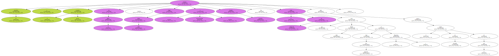
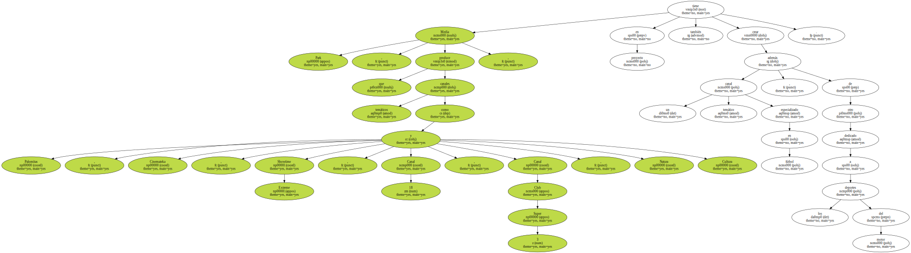

La empresa Media Park , un centro multimedia que se ha convertido en una de las principales productoras de canales temáticos de televisión de España , desarrollará una página de Internet dedicada al fútbol en colaboración con la Real Federación Española de Fútbol ( RFEF ).

El presidente y el secretario general de la RFEF , Angel María Villar y Gerardo González , respectivamente , visitaron hoy el centro de producción que Media Park tiene en Sant Just Desvern ( Barcelona ) para conocer el estado de desarrollo de la web.
Media Park , que produce canales temáticos como Palomitas , Cinemateka , Showtime Extreme , Canal 18 , Canal Club Super 3 , Natura y Cultura , tiene en proyecto también crear un canal temático especializado en fútbol , además de otro dedicado a los deportes del motor.
